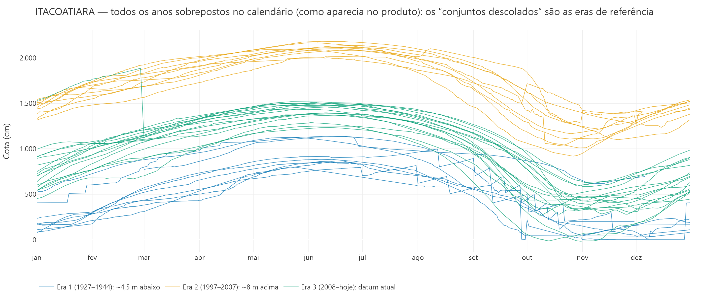
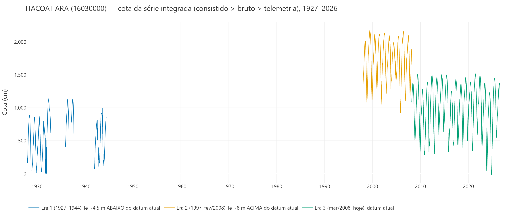
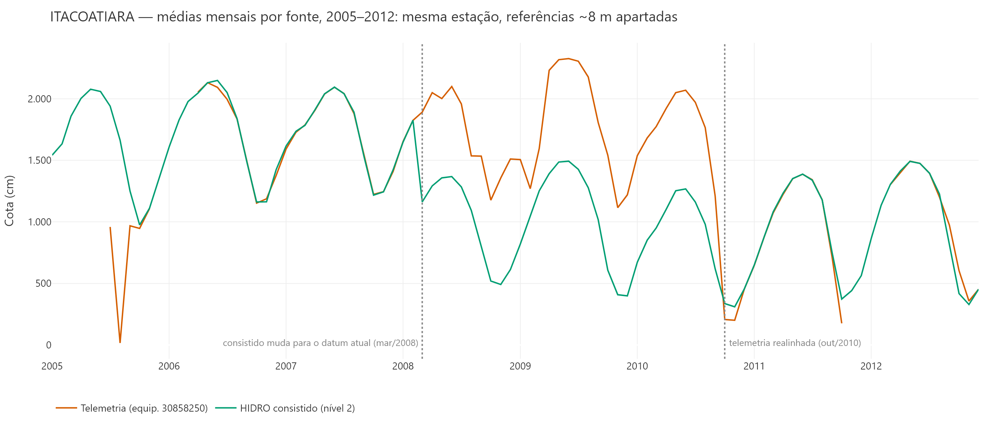
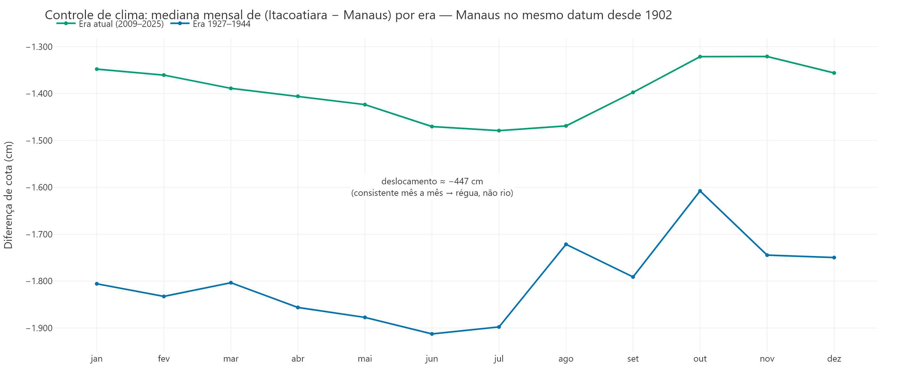
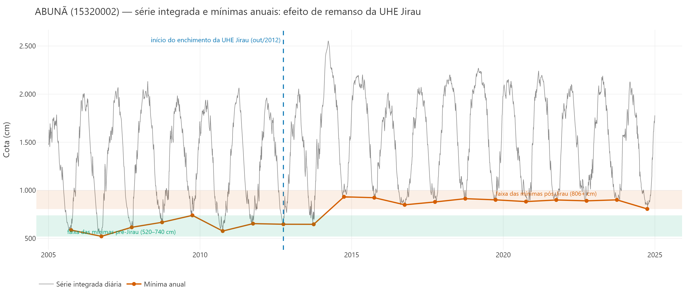

Casos ITACOATIARA (16030000) e ABUNÃ (15320002) — análise, decisões aplicadas e pontos para discussão
O produto "Projeções de Nível — Estações-Chave para Hidrovias" projeta cotas por analogia: seleciona anos históricos com cota semelhante à atual no mesmo dia do calendário e projeta as trajetórias desses anos até 31/dez. A validade do método depende de uma premissa silenciosa: todas as cotas da série precisam estar na mesma referência de nível (zero de régua). Ao incorporar as estações Itacoatiara e Manaus, essa premissa falhou em dois casos, com causas diferentes:
Decisões aplicadas (configuráveis e documentadas em código): Itacoatiara passa a usar apenas 2009 em diante (primeiro ano civil inteiro no datum atual); Abunã, apenas 2014 em diante (primeiro ano civil inteiro sob remanso estabelecido). Além disso, o pipeline ganhou uma sentinela automática que alerta, a cada atualização, degraus sustentados anômalos nas medianas anuais de qualquer estação.
O diagnóstico seguiu três etapas, aplicáveis a casos futuros:
No gráfico de histórico anual do produto, as curvas formavam dois conjuntos "descolados", com um vão entre eles — máximas de cheia de ~2.000–2.200 cm num conjunto e ~1.200–1.500 cm no outro (Fig. 1). Amplitude e forma sazonal eram normais em ambos; apenas o patamar diferia, o que descarta hidrologia e aponta para referência de nível. Note-se que as curvas da era 1927–1944 (azul) caem dentro da moldura do conjunto atual — por isso a exclusão delas, isoladamente, não alterava o aspecto do gráfico; a incompatibilidade delas só se demonstra com o controle de clima da seção 3.3.


O hiato 1945–1996, visível na Figura 2, é real na fonte: a estação ficou desativada por ~52 anos e foi reativada em 1997. Verificação: a tabela original do banco HIDRO (hidro.cotas) não tem nenhum registro da estação no período, e a busca no inventário por códigos vizinhos e por nome não encontrou código alternativo que cubra o intervalo (a única estação fluviométrica ITACOATIARA é a 16030000). A ressalva é que isso reflete o acervo digitalizado — eventuais registros em papel do período não estão no data lake.
A investigação por fonte revelou que cada fonte migrou para o datum atual em momento distinto — por isso o problema não aparece de forma óbvia em nenhuma consulta isolada:
| Período | Situação vs. datum atual | Evidência |
|---|---|---|
| 1927–1944 | lê ~4,5 m ABAIXO | Controle via Manaus: relação Ita−Man desloca −447 cm entre eras, consistente mês a mês (Fig. 4) |
| 1997–fev/2008 (consistido) | lê ~8 m ACIMA | Máximas 2.000–2.180 cm vs. 1.235–1.520 cm na era atual; telemetria da época concorda com esse patamar até fev/2008 |
| mar/2008–hoje (consistido) | datum atual | Médias mensais do consistido caem ~8 m entre fev e mar/2008 (Fig. 3) |
| Bruto (nível 1) | datum antigo até 2009 | Realinha em 2010 (máx. 2.343 cm ainda em 2009) |
| Telemetria (30858250) | datum antigo até set/2010 | Realinha em out/2010; de mar/2008 a out/2010 diverge ~8 m do consistido (Fig. 3) |

Visualmente, as curvas de 1927–1944 caem dentro da moldura do conjunto atual — o que sugeriria compatibilidade. O teste com controle de clima desfaz a impressão: usando Manaus (mesmo datum desde 1902) como referência, a relação entre as duas estações mudou −447 cm entre as eras, de forma consistente em todos os meses do ano. Ou seja, não foi o rio que era mais baixo: a régua da época lia ~4,5 m abaixo da atual. Um ano de 1930 com "cota 600" equivaleria a ~1.050 cm na régua atual — pareá-lo com anos atuais de cota 600 contaminaria a analogia.

Aproveitar 1927–1944 somando um offset (~+447 cm) é tecnicamente possível, mas não recomendado: a incerteza é de ±0,5–1 m (a relação entre as estações é não linear nas águas baixas e a era antiga tem meses com poucas observações), e o produto exporta memória de cálculo auditável — publicar dado oficial alterado por correção própria comprometeria a auditabilidade. São ~10 anos esparsos de um século atrás, com baixo ganho para a analogia do regime atual.
Série publicada passa a iniciar em 2009 — primeiro ano civil inteiro no datum atual. Verificação ano a ano da série resultante: 2009–2023 são 100% consistido com anos completos (sem preenchimento por bruto/telemetria não realinhados, que era o risco residual em 2009–2010); 2024–2025 bruto já realinhado; 2026 telemetria. Máximas entre 1.235 e 1.520 cm — família única de curvas. Custo: universo de analogia de 17 anos.
A sentinela de degraus acusou +6,3 m sustentados nas medianas anuais entre 2012 e 2013. Diferente de Itacoatiara, a auditoria fonte a fonte não encontrou divergência entre consistido, bruto e telemetria (medianas de diferença ~0 cm nas sobreposições) — o degrau está em todas as fontes, logo não é erro de régua nem de processamento.
O padrão é fisicamente característico de remanso de reservatório: as mínimas de estiagem sobem de forma permanente (faixa de 520–740 cm até 2012 para 806+ cm de 2014 em diante — nunca mais retornaram ao patamar anterior, nem nas secas recordes de 2023–2024), enquanto as máximas de cheia pouco se alteram (o remanso é dominante nas vazões baixas). A cronologia coincide com o enchimento da UHE Jirau, iniciado em out/2012, cujo reservatório alcança a região de Abunã. 2013 é ano de transição (mínima de 647 cm, ainda em elevação).

| Métrica (consistido) | Pré-Jirau (2005–2012) | Transição (2013) | Pós-Jirau (2014–2026) |
|---|---|---|---|
| Mínima anual (cm) | 522 a 740 | 647 | 806 a 1.415 |
| Média set–nov (cm) | 708 a 914 | 1.021 | 1.037+ (2014) |
| Máxima anual (cm) | 1.787 a 2.134 | 2.056 | 2.018 a 2.554 |
Série publicada passa a iniciar em 2014 — primeiro ano civil inteiro sob o regime de remanso estabelecido (2013, transicional, fica fora). Justificativa: a analogia projeta justamente a recessão até o fim do ano; usar anos pré-Jirau como análogos subestimaria sistematicamente os níveis de estiagem projetados no regime atual. Custo: universo de analogia de 12 anos. Ponto em aberto para o grupo: confirmar o ano de corte (2013 ou 2014) com quem acompanha a operação de Jirau, e avaliar se variações operacionais do reservatório justificam alguma cautela adicional na leitura das projeções de estiagem em Abunã.
A mesma auditoria (fonte a fonte + sentinela) foi aplicada às 8 estações do produto:
| Estação | Coerência entre fontes (mediana da dif.) | Degrau na série publicada | Situação |
|---|---|---|---|
| Itaituba | ±2 cm | — | ok |
| Abunã | ±0 cm | +6,3 m (2012→2013) | remanso Jirau — corte 2014 |
| Porto Velho | ±0 cm | — | ok |
| Tabatinga | ±0 cm | — | ok |
| Ladário | ±0 cm | — | ok |
| Porto Murtinho | ±1 cm | — | ok |
| Itacoatiara | divergência ~8 m (pré-out/2010) | tratado | corte 2009 |
| Manaus | +1 cm (80 meses de sobreposição) | — | ok — emenda consistido→telemetria em 2014/2015 verificada |
Observação sobre Manaus: o HIDRO da estação encerra em 2014 e o período 2015–2024 é coberto pela telemetria. A emenda foi validada nos 80 meses de sobreposição entre as fontes (diferença mediana de +1 cm) — mesma referência.
Anexo técnico: as consultas e verificações deste relatório foram executadas diretamente no data lake da ANA (hidro.pivotcotas com MediaDiaria=1, níveis de consistência 1 e 2; hidroInfoAna.cotas agregada por dia). O detector de degraus e os cortes por estação estão versionados no repositório do produto (pipeline/verificacoes.py e estacoes.py), com testes automatizados. Página de circulação restrita: não há link para este documento nas páginas do site.